Un espacio genial para un millennial: un loft urbano donde la tecnología convive con la calidez
Para Casa FOA 2018, el estudio diseñó el espacio de exhibición de un local de equipamiento [nombre del local]. La propuesta fue un loft de estilo industrial, con una envolvente diseñada para albergar distintas funciones: relax, reuniones con amigos, comidas y trabajo.

El dueño de casa
Varios elementos del loft permiten imaginar a quien vive allí: un hombre de ciudad, joven, con gustos de señor moderno. Ama el arte y el deporte, disfruta de un hogar con fuego auténtico y de tomar unos tragos en el bar.
Recibe amigos y la noche se alarga junto a la chimenea. Sale temprano a pedalear, deja los anteojos sobre la mesa baja, tiene un libro de Gio Ponti siempre a mano y termina el día con un whisky. Vive rodeado de diseño, pero sin solemnidad: también se hamaca junto al ventanal.
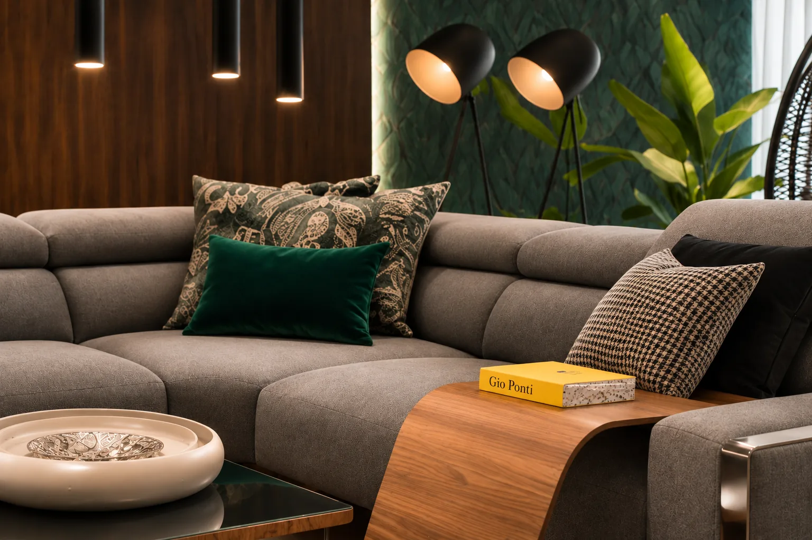
El gran sillón
El gran sillón esquinero habla del placer de recibir. Lo acompañan mesas bajas de vidrio negro y madera, en distintas alturas.
Espíritu lúdico
El arte seleccionado ayuda a imaginar a este habitante: su espíritu lúdico y su estética en las cuatro obras de Gaspar Libedinsky, y el gran cuadro de Platz de líneas geométricas en paleta de grises y blancos.
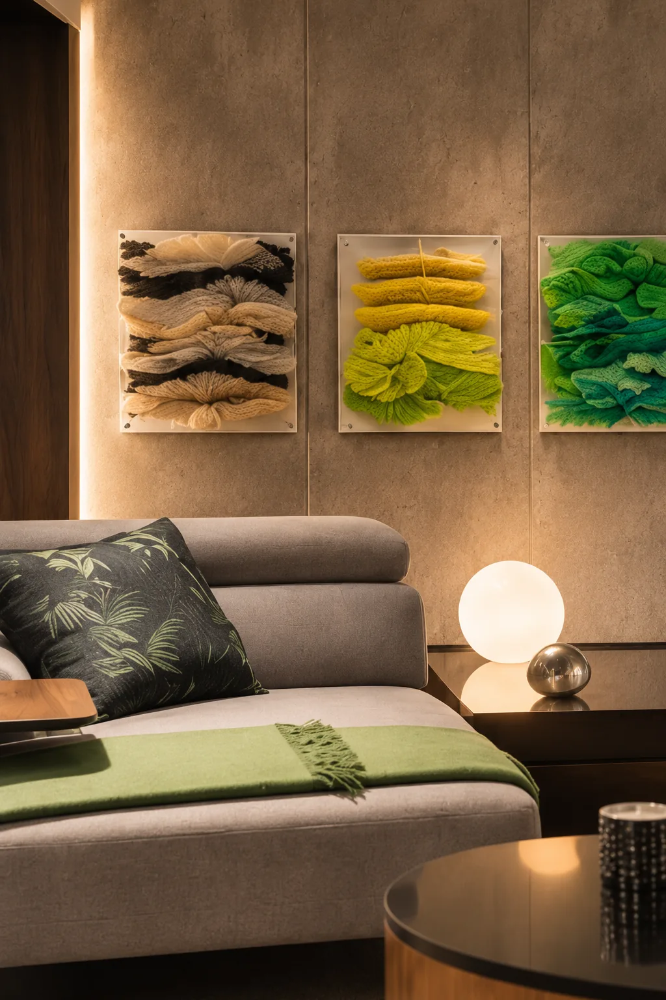

Un hogar auténtico
Un panel de madera reúne el hogar y el espejo; a su lado, una biblioteca iluminada sobre el empapelado de print vegetal arma un rincón de lectura.
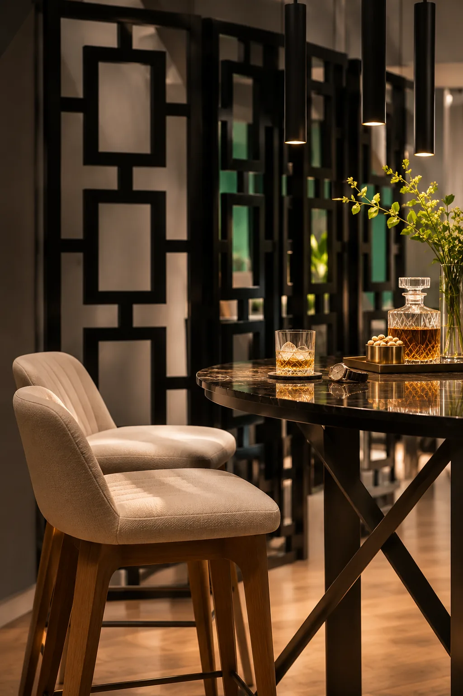
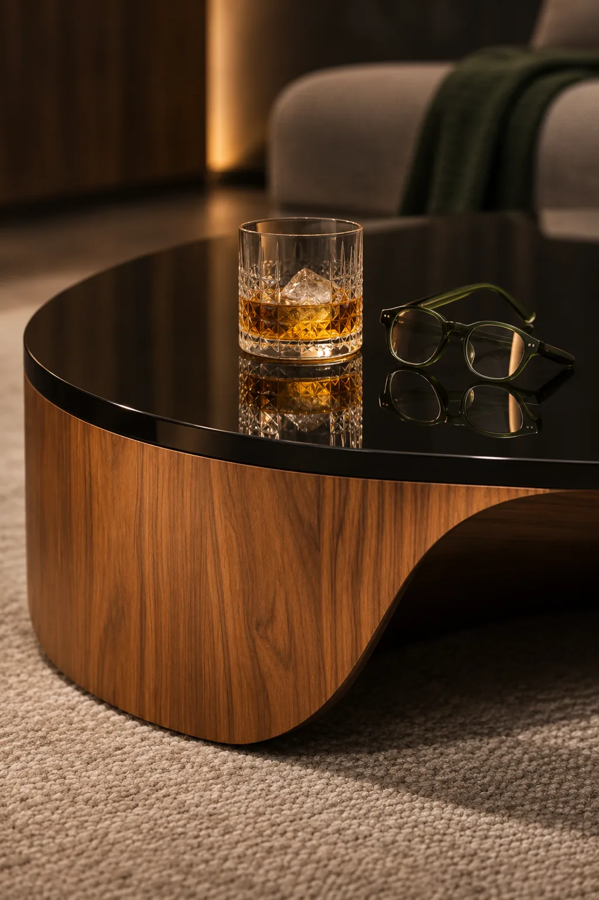
Un trago al final del día
Ohmio Gallery aportó objetos mid century restaurados: el biombo negro que enmarca el bar, el carro bar, las luminarias sobre la mesa y de pie, y una silla Platner original en alambre de acero.

Junto al ventanal
La bicicleta queda a la vista, junto al ventanal. La hamaca colgante, de fibras orgánicas, dialoga con las sillas de policarbonato color ámbar de Calligaris, un material de alta tecnología.
La convivencia de la tecnología de avanzada con la calidez y el toque humano, en un regreso al contacto con lo natural
La envolvente
Tecnología de avanzada y producción industrial conviven con materiales naturales y sustentables. Las vigas y columnas de hierro existentes se trataron con un revestimiento gris grafitado.
La caja muraria en tonos de madera y piedra símil concreto, el piso de entablonado de madera natural y el empapelado con print vegetal repetido en dos paredes proponen un regreso a las fuentes, al contacto con lo natural. Alfombras orientales de textil sintético y dibujos geométricos completan la envolvente.
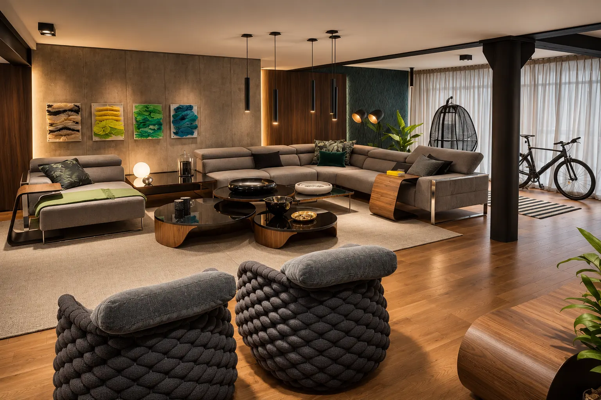
- Madera natural
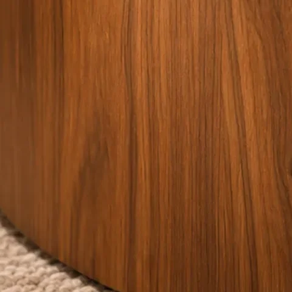
- Piedra símil concreto
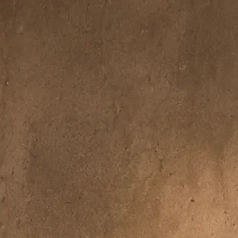
- Empapelado vegetal
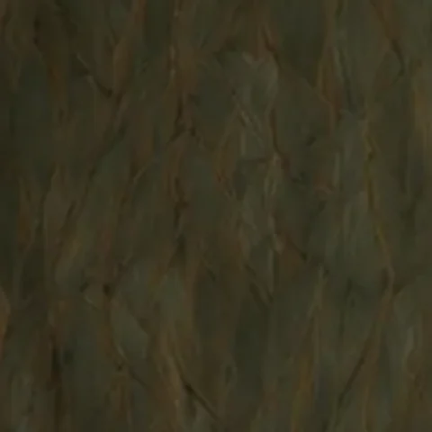
- Biombo de hierro negro
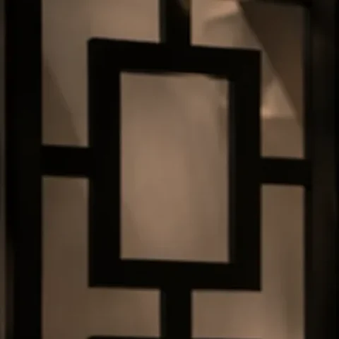
- Textiles con textura
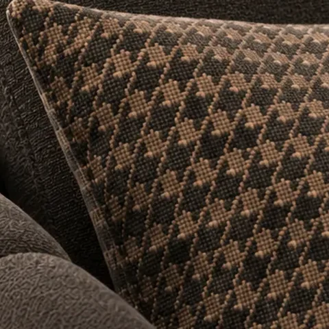
- Vidrio negro
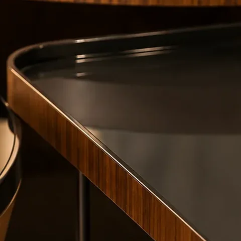
Piezas y texturas
Los muebles de la nueva línea de Calligaris se destacan, acompañados por otras piezas más neutras de diferentes texturas.
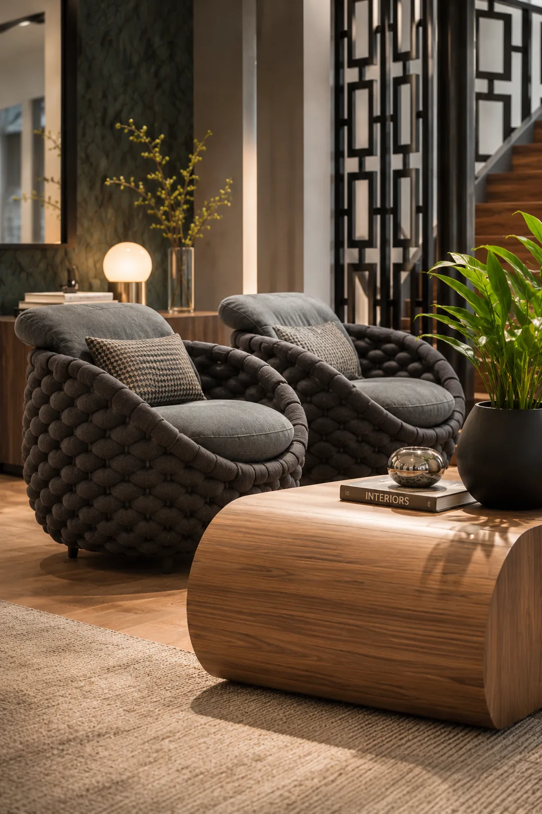
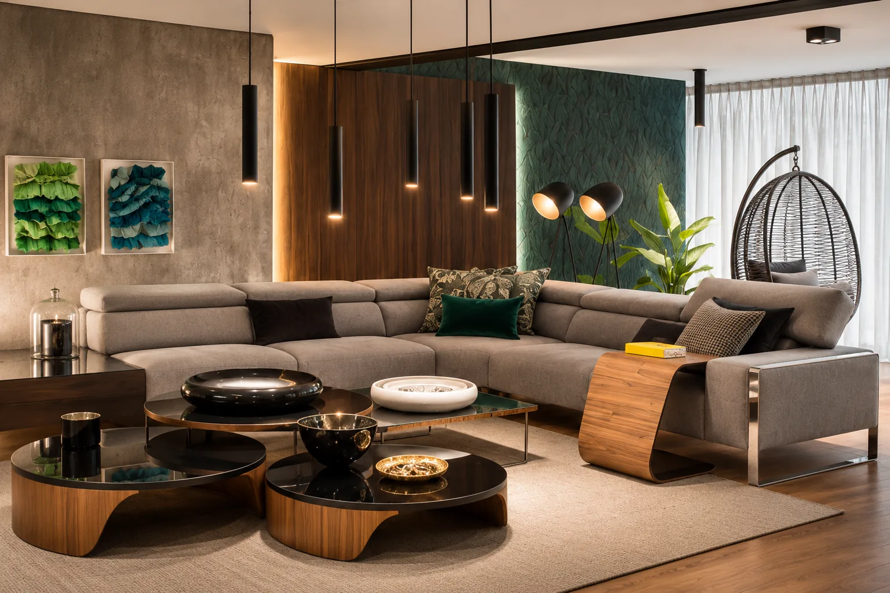
Luz que ordena
Spots aplicados ponen el acento, y colgantes en forma de tubo sobre las mesas marcan los espacios de trabajo, de comidas y de relax.
Calidez y toque humano
Los objetos de decoración completan la ambientación, y la paleta de colores sostiene el concepto: la convivencia de la tecnología de avanzada con la calidez y el toque humano.
- Mobiliario
- Calligaris, nueva línea
- Objetos mid century
- Ohmio Gallery
- Obras textiles
- Gaspar Libedinsky
- Cuadro
- Platz
Luz y materia
Esta obra es un espacio de exhibición: interiores, iluminación, selección de mobiliario, arte y objetos, reunidos en torno a un mismo concepto.
Conocer los servicios
Otros proyectos
Ver todos los proyectos


Todo empieza con una conversación
El estudio diseña viviendas completas en Argentina, España y Estados Unidos.